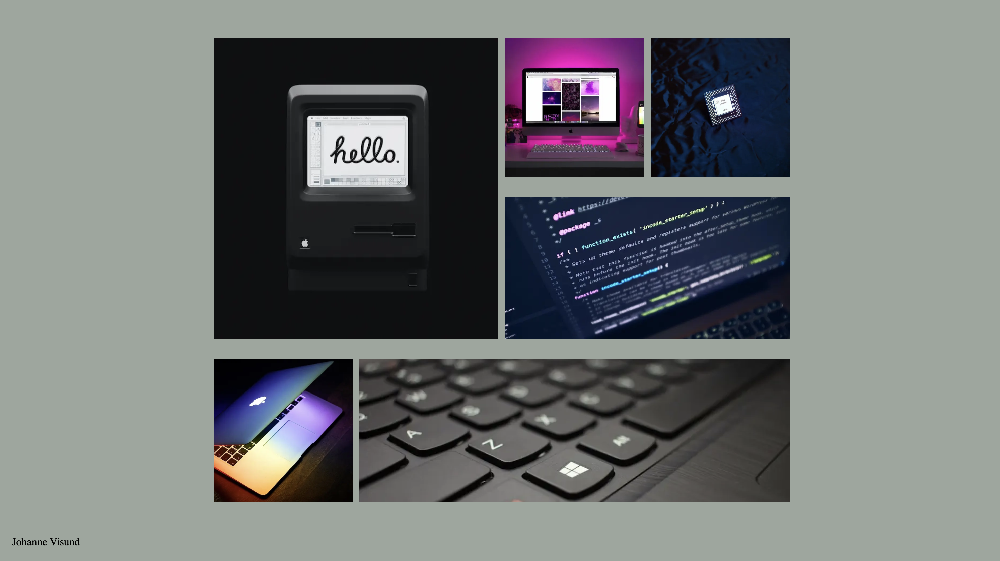

studiestarts prøven
Generel web var et tema rettet mod at introducere os til html og css, herunder hvordan man laver et website og hvordan man laver det responsivt. Derudover fokuserede temaet på at introducerer os til figma som program med dets egenskaber. Igennem opgaven ”studeistartsprøven”, blev vi introduceret til html, css, grid, fonte og mere.
